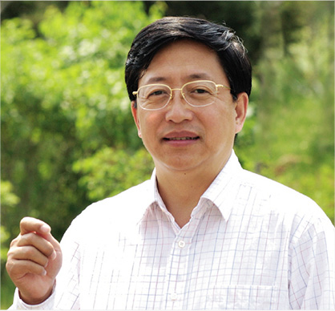

|  | 专家姓名： | 张三 | |
| 性别： | 男 | ||
| 出生年月： | 1976年1月25日 | ||
| 省份： | 陕西省 | ||
| 工作单位： | 山西省农业厅 | ||
| 职称： | 教授 | ||
| 研究方向： | 畜牧业 |
| 研究成果： | 【荷兰转基因玉米与传统玉米间的基因流动】 |
|
荷兰瓦格宁根大学国际植物研究所为农业部开展的田间试验表明，如果种植者考虑到了已经认可的田间隔离距离的话，转基因玉米与传统玉米间发生花粉介导基 因流动的可能性不大。在荷兰，转基因玉米与传统玉米及有机玉米的隔离距离分别为25米和250米。 研究人员发现来自受体试验田（其中的样本用于检查混合情况）的一个样本的数据明显偏高。据科学家分析，最合理的解释是在非转基因试验田中混播了转基因种子，尽管这次试验是严格按照田间试验规程来做的。因此，荷兰农业部长Gerda Verburg建议为商业化种植转基因作物制定更多的措施，比如对种植者进行责任教育。尽管如此，试验田中转基因物质的比例仍远低于欧盟许可的0.9％的上限。 |